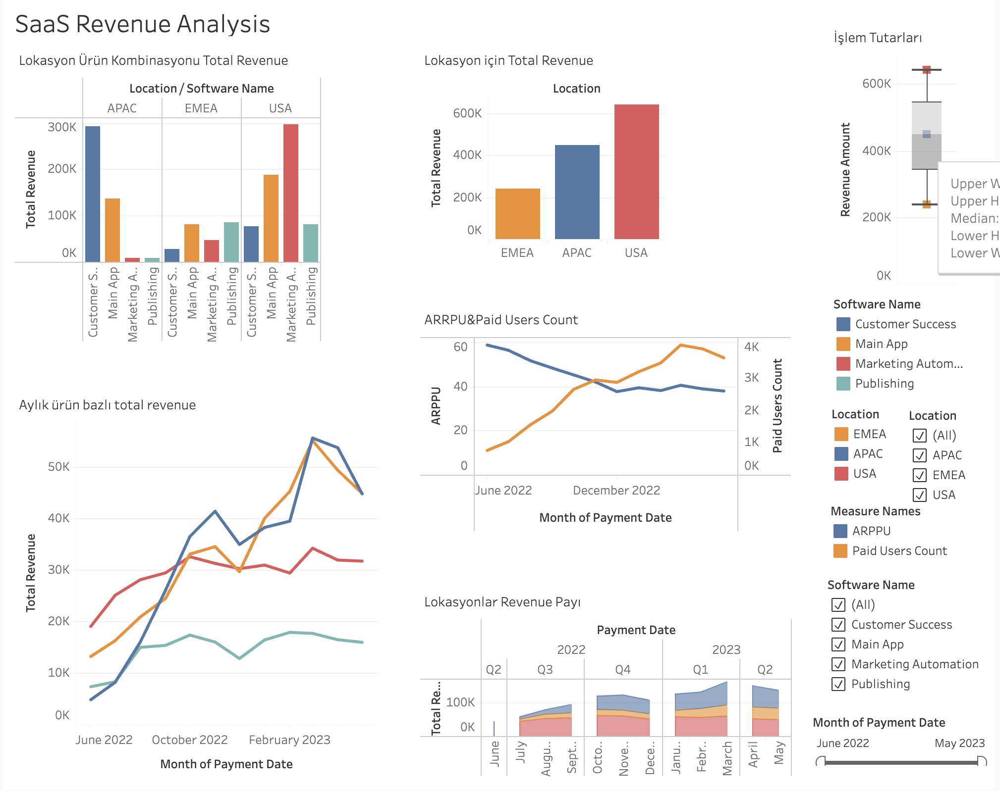

1. Proje: SaaS Gelir Analizi (Tableau)
Açıklama:
- Bu projede, SaaS (Software as a Service) modeline sahip bir şirketin gelir performansı incelendi.
- Amacım, şirketin hangi ülkelerden ve hangi zaman aralıklarında daha fazla gelir elde ettiğini görünür kılmaktı.
- Kullanıcı davranışları ve ödeme alışkanlıkları üzerinden stratejik kararlar alınabilmesine katkı sağladım.
Teknik:
- Tableau kullanarak SaaS şirketine ait ARPPU (Average Revenue per Paying User), ödeme yapan kullanıcı sayısı, toplam gelir ve konum bazlı gelir gibi metrikleri zamana ve ülkeye göre filtrelenebilir hale getirdim.
- Dashboard'da KPI'lar, trend analizleri ve ödeme davranış kalıpları sunularak karar vericilerin görsel destekli analiz yapması sağlandı.
Odak Noktaları:
- Konum bazlı gelir analizi
- Zaman serisi takibi
- ARPPU
- Ödeme yapan kullanıcı analizleri
Kullanılan Araçlar: Tableau